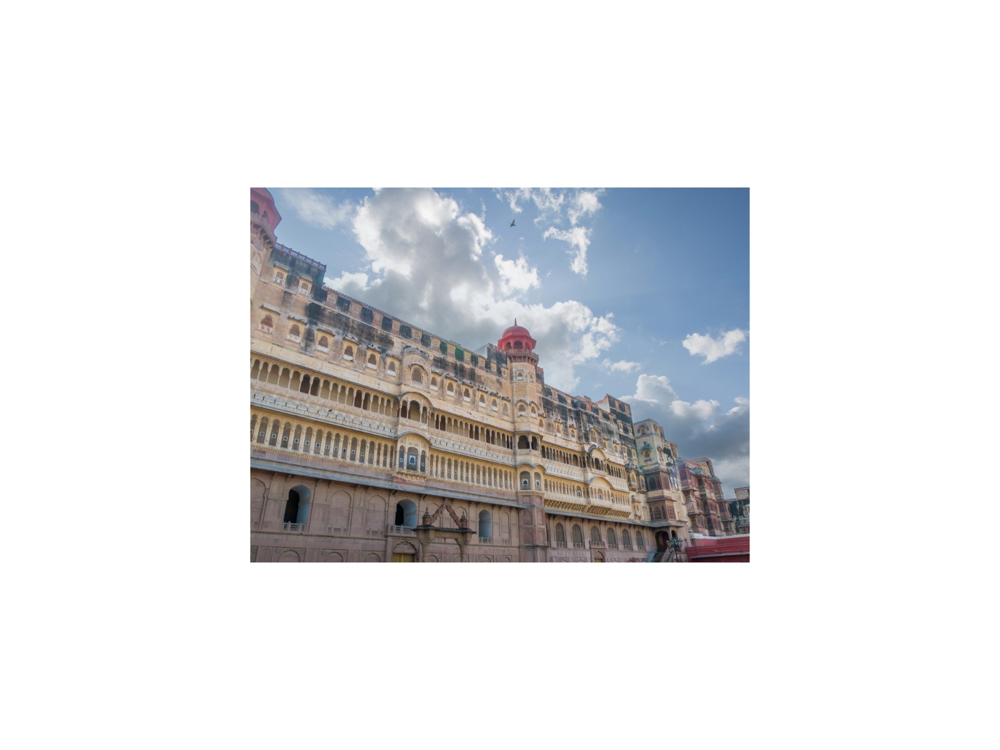
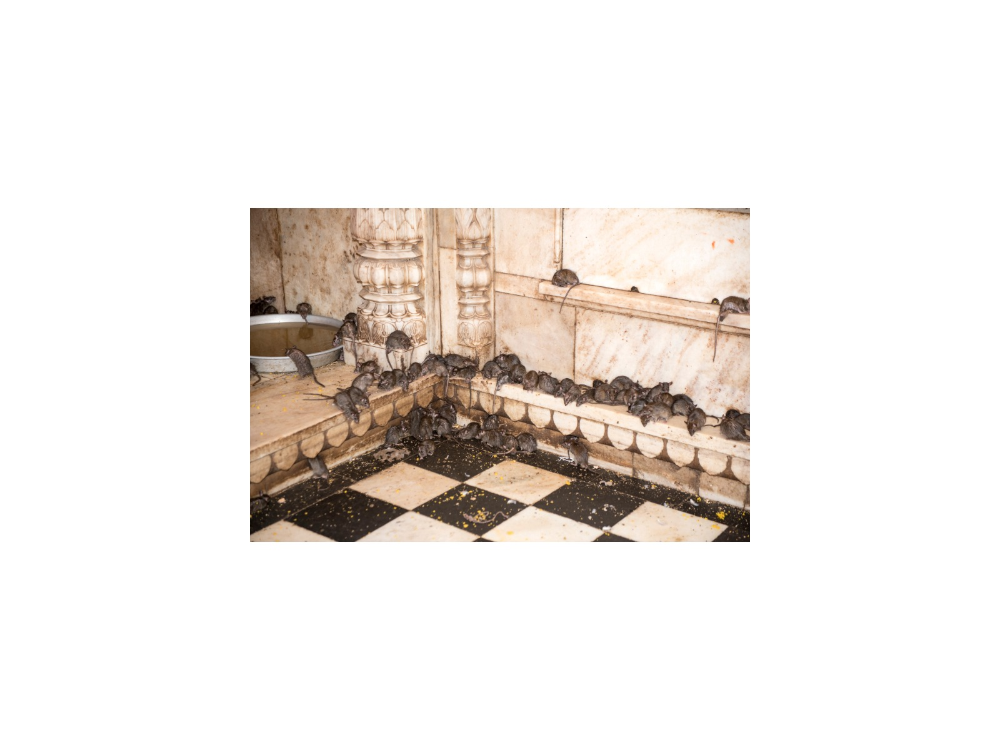
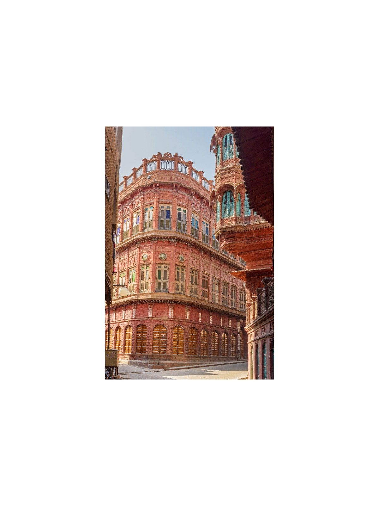
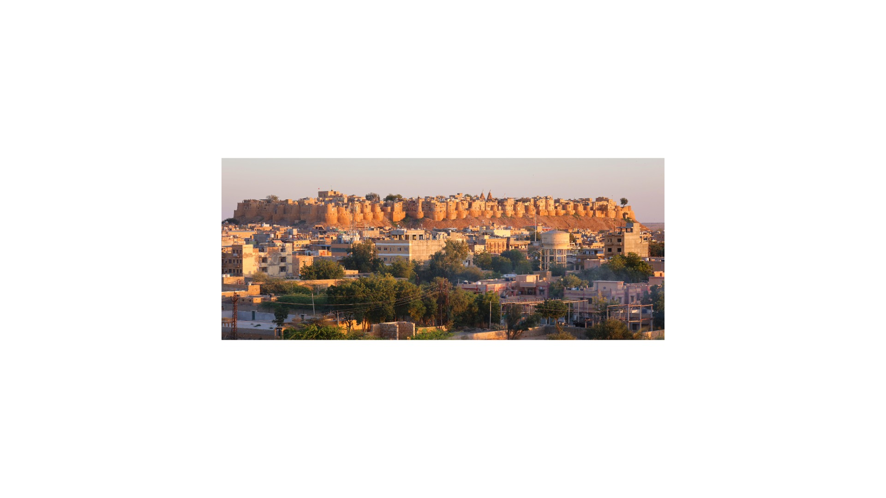
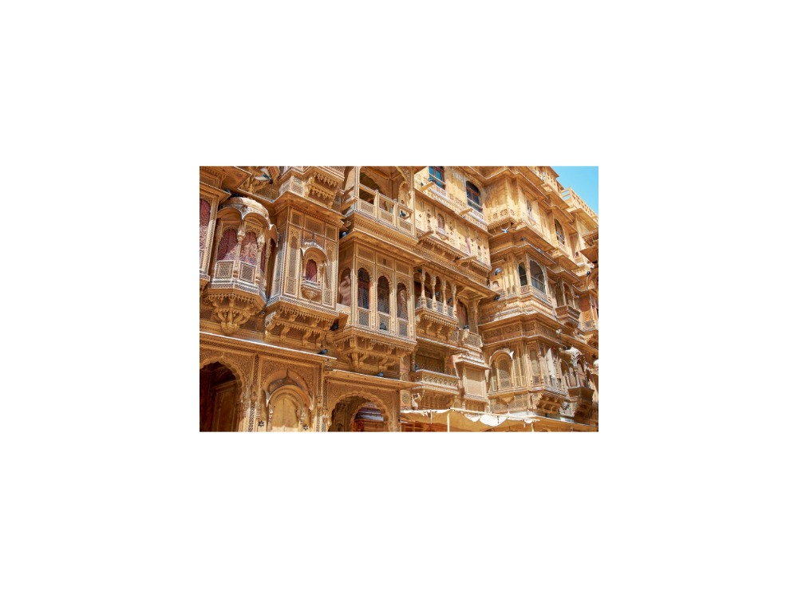
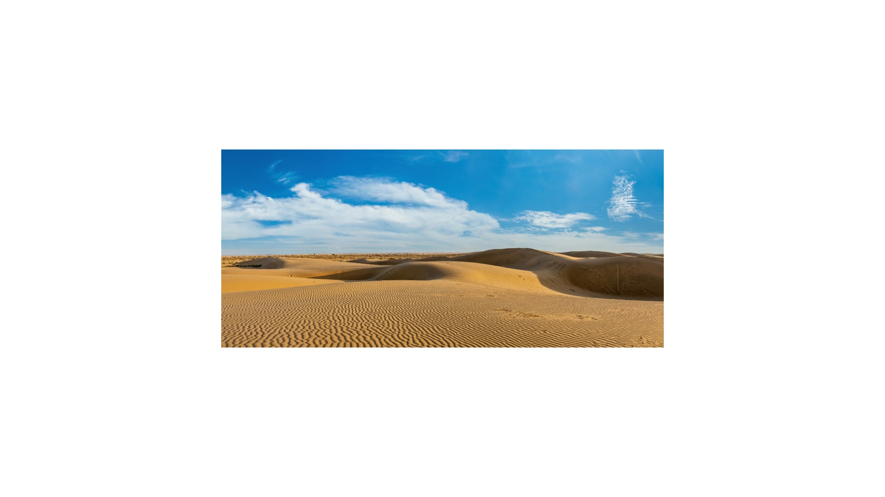

Home · Destinations · Jaisalmer & Bikaner
Jaisalmer & Bikaner
The Golden City of the Thar with its living fort, and Bikaner's Junagarh Fort.
Sights and monuments
Bikaner, Jaisalmer

Junagarh Fort
Karni Mata
Rampuria Havelis
Fort
Patwon ki Haveli
Sam Sand Dunes Gadisar Lake
Gadisar Lake Desert Camp
Desert Camp Bhandasar Jain Temple
Bhandasar Jain TemplePlan Your Private Journey
Tell me your dates and interests
I will personally prepare an itinerary and quotation within 24 hours. No groups, no fixed scripts.